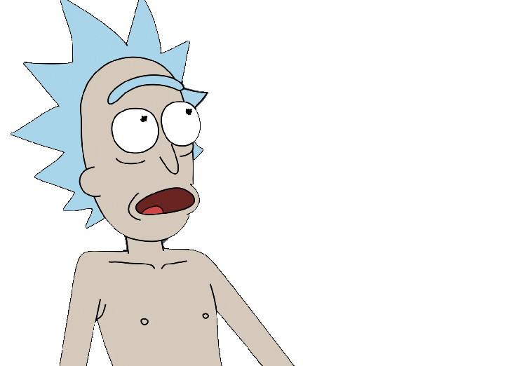

RULE ONE: Don't let the grid define you.
RULE TWO: Don't let the prompt limit you.
RULE THREE: CLients have no say Heck with them.
RULE FOUR: Consider everything an experiment.
RULE FIVE: Last minute is the best minute.
RULE SIX: Defy everything "normal" and standard.
RULE SEVEN: You can give up. What's the worst that can happen.
RULE EIGHT: Stick to what you know innovation is for those who care.
RULE NINE: If you aren't happy. STOP
